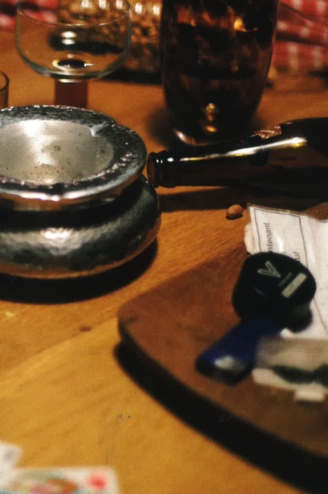
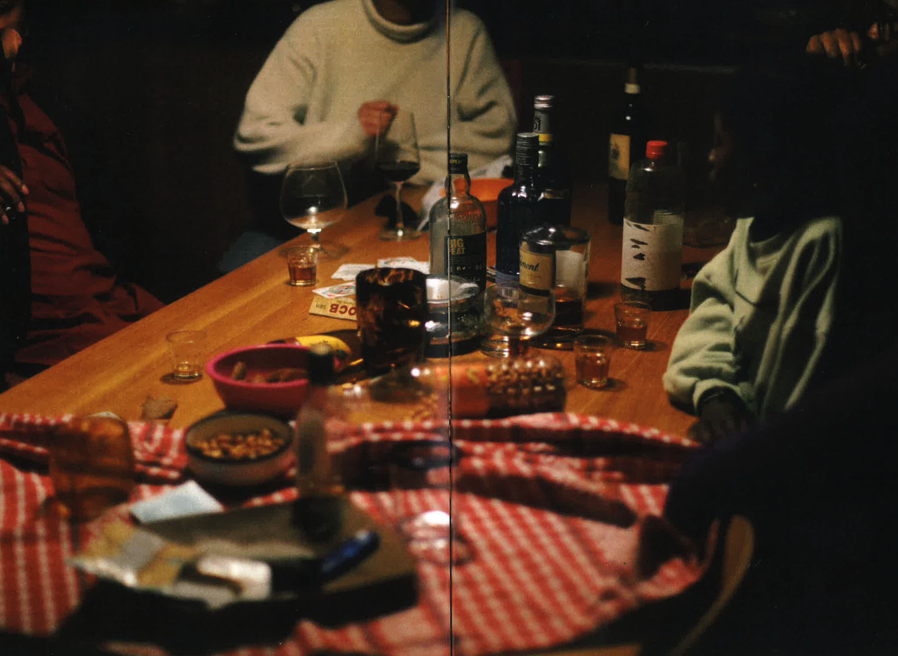
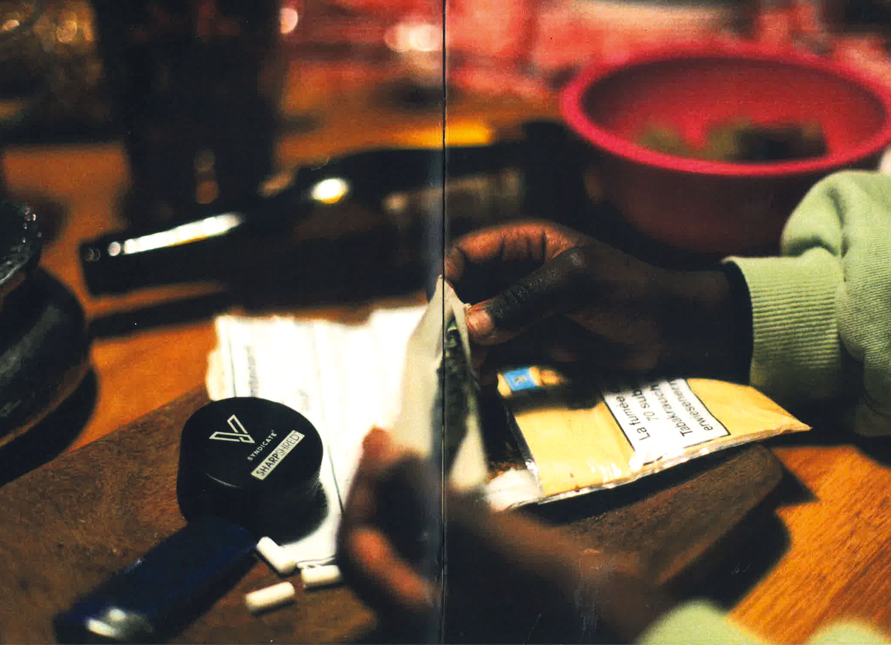
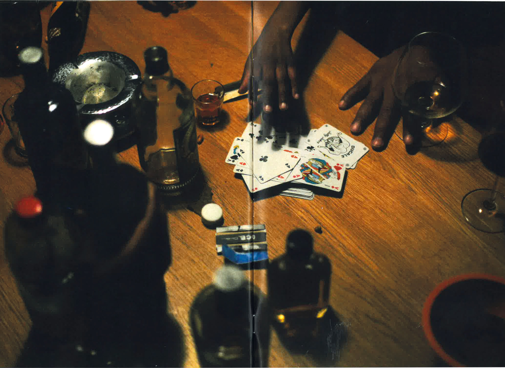
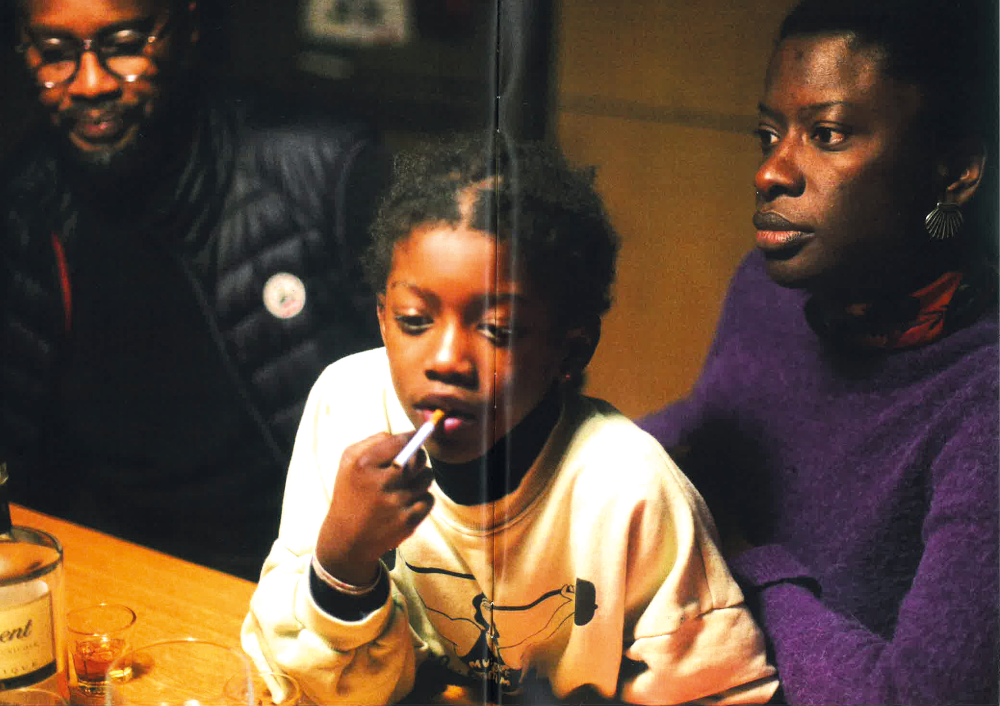

Dans ce premier projet photographique, j’explore l’univers de la fiction-horreur. Ayant grandi entouré d’art africain, j’ai passé mon enfance dans une maison remplie d’objets chargés d’histoire. Beaucoup d’entre eux étaient des chasseurs d’esprits, et, enfant, rien ne m’effrayait plus que d’en croiser un au détour d’une pièce. À travers ces images, je donne corps à cet esprit qui, dans mes souvenirs, semblait se dissimuler partout.
    Pour ce deuxième projet, je continue d’explorer la fiction, mais en m’aventurant vers quelque chose de plus provocant qu'horrifique. On m’a récemment confié qu’être parent était difficile et que les enfants grandissaient si vite qu’on ne s’en rendait presque pas compte. Cela m’a poussé à imaginer ce que des parents pourraient découvrir en allant à une de leur soirée : une scène absurde où des bébés se comportent comme des adultes: ils fument, boivent et jouent aux cartes. Une vision volontairement choquante, pensée pour bousculer la vision qu'on peut avoir d'un jeune adulte lorsqu'on est parent.